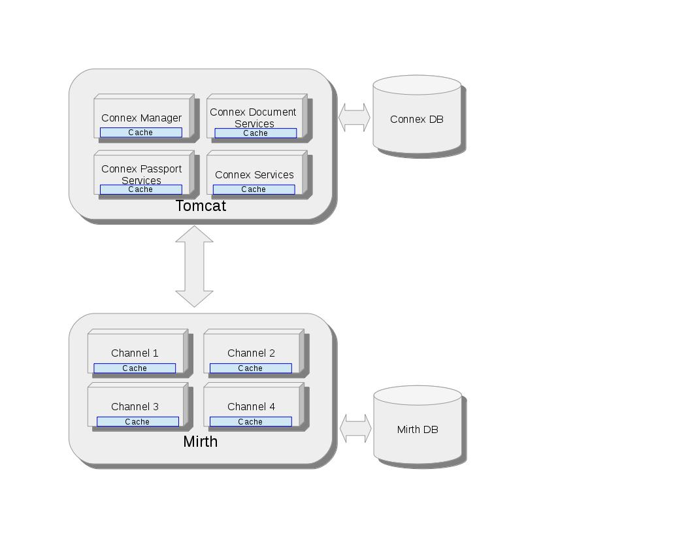
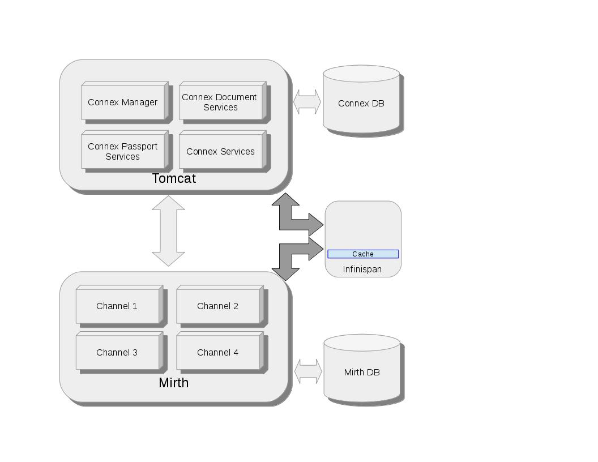

Purpose of this document is to outline steps taken to determine best cache implementation for configuration management.
Following are basic requirements which needs to be addressed as part of design.
Following design options have been considered
EhCache and Infinispan caches can be used as in-memory cache and widely used by multiple framework including Hibernate. Implemented as below within Connex product.
Infinispan standalone implementation has been taken for benchmarking, since this supports out-of-box rest interface and easy to install/maintain. Implemented as below within Connex product.
Infinispan forms cluster of distributed in-memory cache to achieve performance and avoid making external call overhead. This will be very helpful when there is large data which needs to be shared between distributed application. Infinispan takes care of replicating/distributing data between cluster that helps enterprise application focus on business logic. Implemented as below within Connex product.
To determine best approach each design has been validated with requirement and one of the requirement is to see very little performance degradation. This has been measured with JMeter Java Sampler which does 10 threads with 1000 test execution. Each test reads 10 configuration values from memory.
Note: This metrics collection does not include loading data into cache
| Type of Implementation | Total elapsed time (ms) | Average time (ms per 10 configuration) |
| ehcache | 394 | 0.0394 |
| stand alone | 306609 | 30.6609 |
| facility database | 317090 | 31.7090 |
| corp database | 1550589 | 155.0727 |
| infinispan embedded | 494 | 0.0494 |
| infinispan embedded data grid | 101 | 0.0101 |
Based on above performance number and requirements in-memory cache would be better solution for configuration management at this time. We also considered memory foot print impact because of in-memory cache, based on analysis provided ( Link ) it will increase memory foot print by 1MB maximum for configuration management within each class loader and that is very small increase.